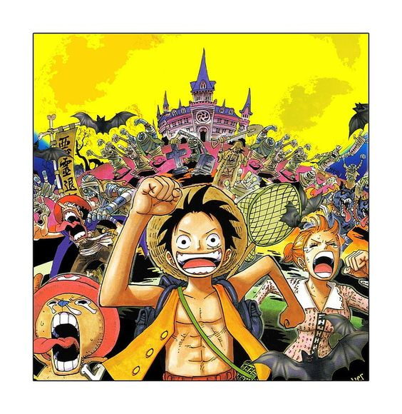

Episódios: 326 a 384
Agora com Franky na tripulação, os Chapéus de Palha viajam pelo Triângulo Florian e acabam chegando a uma ilha fantasma conhecida como Thriller Bark. No local, Luffy e outros tripulantes têm suas sombras roubadas pelo Warlord do mar Gecko Moria, e precisam correr contra o tempo para recuperá-la antes do pôr do sol. O grupo acaba contando com a inesperada ajuda de Brook, um esqueleto com vida que os auxilia a lutar contra os Oars, gigantes criaturas que Moria traz de volta à vida. Embora esta saga conte com dois arcos fillers, o arco Thriller Bark dá conta de toda a emoção pela qual os fãs do anime poderiam esperar. Os episódios contam com batalhas de tirar o fôlego e marcam a entrada de Brook para a tripulação dos Chapéus de Palha.
